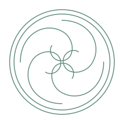
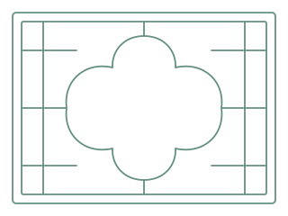
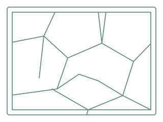
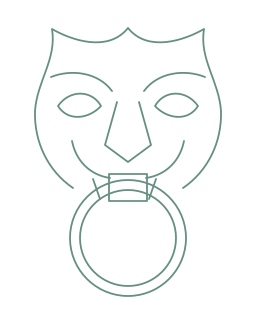
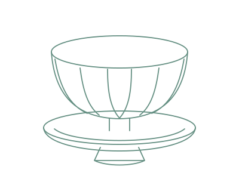
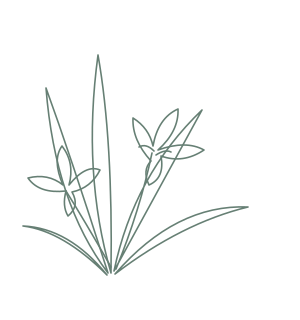
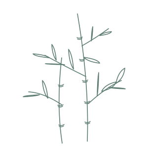
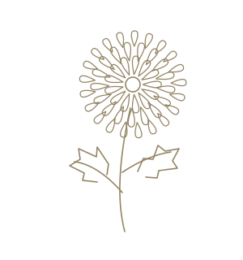

线，留一点余韵
原创透明SVG资源。参考传统形制绘制的现代装饰意象；具体尺寸、文化参考及许可见 manifest.json。用于背景时建议5–12%不透明度，一页只选一种主纹样。

卷云瓦当120–240px · 章节或封底

海棠窗棂160–300px · 封面边角

冰裂窗棂160–320px · 空间分区
江南园亭240–600px · 横向留白
回纹边饰240–640px · 局部短边线
流云纹样160–320px · 页尾收束

铺首衔环120–260px · 门扉与档案意象

莲瓣碗180–420px · 苏州示例封面

春兰 · 四君子140–260px · 页尾右下角
夏竹 · 四君子140–260px · 页尾右下角
秋菊 · 四君子140–260px · 页尾右下角冬梅 · 四君子140–260px · 页尾右下角 这些形制跨越不同时代，不把所有纹饰称为宋代文物。图形不是馆藏照片的自动描摹，也不是文物测绘复原。